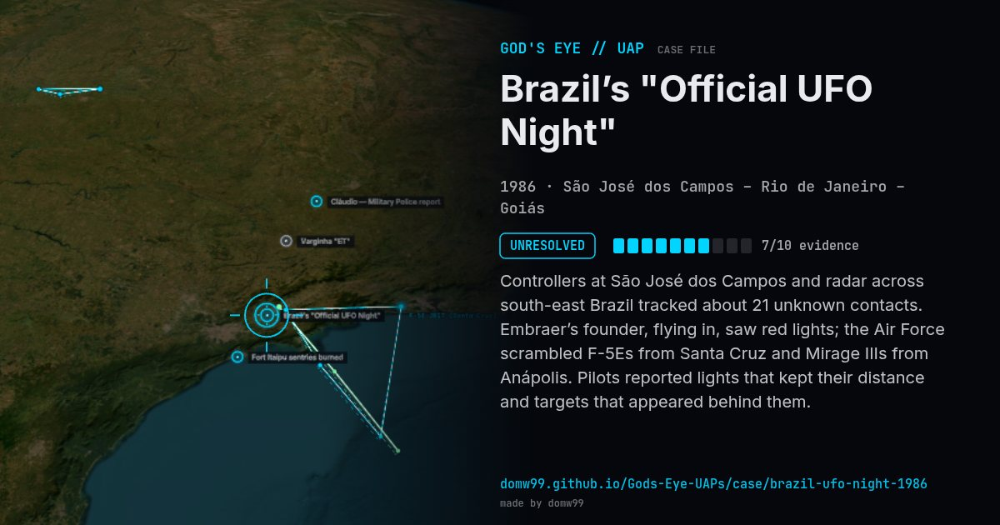

Brazil’s "Official UFO Night"
UNRESOLVED

Controllers at São José dos Campos and radar across south-east Brazil tracked about 21 unknown contacts. Embraer’s founder, flying in, saw red lights; the Air Force scrambled F-5Es from Santa Cruz and Mirage IIIs from Anápolis. Pilots reported lights that kept their distance and targets that appeared behind them.
Explanation
The Air Force commander said "we have no explanation". The report declassified in 2009 described objects with speeds from hovering to supersonic and 90° turns.
What was seen
Shape: Red, white and green lights; 21 radar plots
Witnesses: Controllers, F-5E and Mirage pilots, Embraer founder Ozires Silva
Duration: ~5 hours
Browse
- Brazil
- 1980s
- Unresolved
- Radar-visual cases
- Official government documents
- Military witnesses
- Pilot and aircrew witnesses
- Radar tracking
- Lights and fireballs